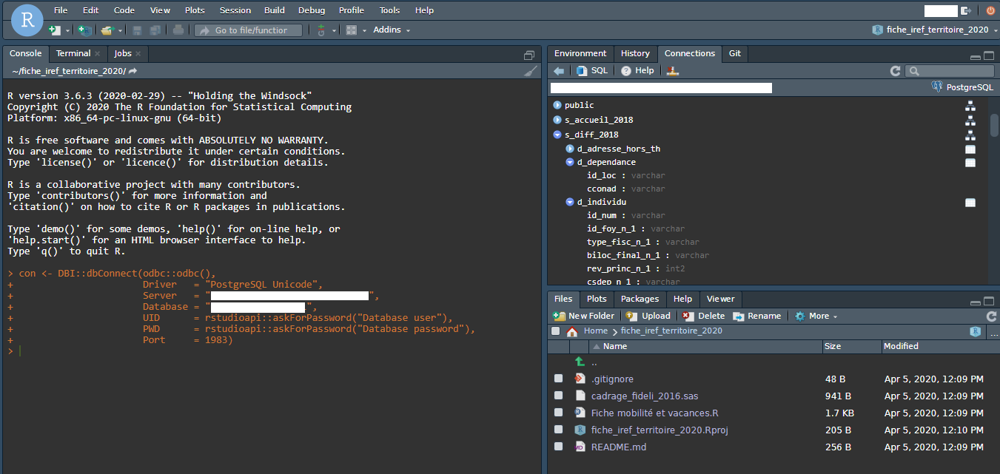

SELECT var1, var2
FROM ma_table
WHERE var3=1
ORDER BY var1 ;17 Se connecter à une base de données
17.1 Tâches concernées et recommandations
L’utilisateur souhaite accéder à des données stockées dans une base de données (sous forme Oracle, PostgreSQL, etc.). Il veut effectuer de la manipulation de données, mais également calculer des indicateurs, réaliser des estimations et en récupérer le résultat.
Tâche concernée et recommandation
-
Il est recommandé d’utiliser le package
DBIqui fournit une boîte à outils génériques pour de multiples bases de données. Ce package doit être complété par un autre package spécifique au type de base de données concernées :- pour une base de données de type Oracle :
ROracle; - pour une base de données de type PostgreSQL :
RPostgres(ouodbcpour les utilisateurs qui souhaitent visualiser l’architecture de la base de données dans RStudio).
- pour une base de données de type Oracle :
- Les utilisateurs débutants peuvent utiliser le package
dbplyrpour se familiariser avec les requêtes SQL. - L’usage de ces packages peut être conditionné à l’installation préalable de librairies système sur lesquelles l’utilisateur standard n’a pas la main. Il faudra le cas échéant contacter les services informatiques pour obtenir l’installation de ces librairies système.
17.2 Rappel des notions essentielles sur les bases de données
17.2.1 Structure de bases de données
Les systèmes de gestion de bases de données (ou SGBD) sont des logiciels permettant de stocker, gérer, manipuler et partager des informations organisées d’une certaine manière (la manière la plus courante étant l’organisation sous forme de tables à deux dimensions - lignes et colonnes - appelée bases de données relationnelles). Cette gestion de l’information se fait de manière transparente pour l’utilisateur, et vise en général à optimiser les opérations sur des bases de données de grande taille.
De ce point de vue, le logiciel de gestion de bases de données est indépendant, au sens où il n’est pas dépendant de la forme que prendra le logiciel permettant à l’utilisateur de consulter et de manipuler l’information de la base de données. Il faut ainsi distinguer deux notions essentielles :
- la notion de client : schématiquement la machine sur laquelle l’utilisateur effectue des requêtes visant à consulter, manipuler, modifier la base de données ;
- la notion de serveur : schématiquement la machine sur laquelle la base de données se situe et qui va se charger d’exécuter les requêtes que le client lui adresse.
Rien n’interdit que le client et le serveur soient la même machine (bien que ce ne soit pas la pratique courante). Néanmoins, cette distinction est essentielle pour la transparence des opérations qu’effectuent le SGBD. Ainsi, plusieurs clients de différentes formes, avec des caractéristiques techniques différentes, peuvent interroger la même base de données. Pour le dire plus simplement dans le contexte de l’Insee, il est possible de se connecter sur une même base de données avec différents logiciels (qui sont ici les clients), tels que SAS, R, Python ou d’autres logiciels spécifiquement dédiés au requêtage et à la gestion de bases de données (PgAdmin, DBeaver, etc.). C’est là tout l’intérêt du système de gestion de bases de données : il permet de s’affranchir des questions du support d’enregistrement de l’information, en offrant une solution accessible par différents logiciels, rendant ainsi le format d’enregistrement agnostique vis-à-vis du langage utilisé, et en parallèle permettant de séparer la manipulation des données et l’analyse qui en est faite.
Ainsi, une requête est une commande plus ou moins complexe permettant de manipuler, de transformer et/ou de générer des données stockées dans la base de données gérées par le SGBD auquel s’adresse la requête. Cette requête est adressée au serveur par le client. Elle peut ou non aboutir à une transmission d’information du serveur vers le client. Là encore, l’intérêt d’une requête s’adressant à un serveur distinct du client est qu’elle permet à l’utilisateur de s’affranchir de toutes les questions qui peuvent surgir lorsqu’on cherche à manipuler un volume de données important. Ces questions sont particulièrement prégnantes sur des logiciels comme R, qui sont très exigeants du point de vue des ressources informatiques. Ainsi, pour une même opération, l’utilisateur aura le choix entre plusieurs approches :
- adresser une requête au serveur pour télécharger les données qui l’intéressent, et réaliser les opérations voulues sur le client directement (mais faisant alors face aux problèmes de ressources sus-mentionnés) ;
- adresser une requête au serveur pour que ce dernier accomplisse les opérations directement sur la base de données, et éventuellement compléter la requête de manière à en récupérer le résultat (sous une forme éventuellement agrégée, selon l’usage qu’on souhaite in fine avoir de l’information ainsi transformée) ;
- soit un mélange des deux, visant à tirer partie à la fois des performances de gestion de gros volumes du serveur, mais également des outils spécifiques (en particulier en matière de statistiques ou d’économétrie) offert par le client.
Reste la question de l’interfaçage entre le client et le serveur, c’est-à-dire la façon dont les deux vont communiquer de façon intelligible, supposé être transparent pour l’utilisateur. Cet interfaçage est assuré par un driver du côté client, qui permet à celui-ci d’envoyer des requêtes que le serveur peut interpréter. Il est donc essentiel de s’assurer que ce driver existe du côté client et qu’il est utilisé par le logiciel. En effet, il existe un grand nombre de SGBD, dont les caractéristiques techniques varient, par exemple MySQL, Oracle, Postgres, SQLite, DuckDB, etc. C’est ici que le package DBI entre en jeu. Ce package contient un certain nombre de fonctions génériques permettant de communiquer avec un serveur de base de données, quel que soit le type de base de données en question. Ce package doit être utilisé avec un autre package qui contient le driver correspondant au type de la base de données que l’on souhaite requêter. Dès lors que ce driver existe et est correctement chargé, les fonctions de DBI permettent d’établir la connexion avec le serveur et de lancer des requêtes.
17.2.2 Qu’est-ce que SQL ?
SQL (pour Structured Query Language ou langage de requête structuré) est un langage informatique spécifiquement dédié à la manipulation, ajout, modification et suppression de données dans un SGBD. Ce langage peut varier dans les fonctions qu’il offre selon la solution technique utilisée (le type de base de données), mais la structure de requête reste globalement la même d’un type de base de données à l’autre. L’utilité du langage SQL vient du fait qu’il permet de formuler des requêtes qui seront exécutées sur le serveur ; sa maîtrise permet à l’utilisateur de déporter sur le serveur la charge de calcul pour la manipulation des données. D’autres solutions existent en R (cf. infra) mais c’est le langage SQL qui offre in fine le plus de possibilités, puisqu’il s’agit du langage natif de requêtage d’une base de données.
Dans les grandes lignes, une requête SQL ressemble généralement à ce qui suit :
Un grand nombre de sites internet proposent des tutoriels sur le langage SQL.
17.4 Se connecter à une base de données
La fonction dbConnect du package DBI permet d’établir la connexion à la base de données. Si les éléments fournis sont corrects, R va créer un objet de type DBIConnection qu’il faudra ensuite utiliser pour chaque requête effectuée sur la base de données.
17.4.1 Se connecter à une base de données PostgreSQL…
17.4.1.1 … avec le package RPostgres
Le package RPostgres fournit directement les drivers permettant de se connecter à une base de données PostgreSQL. Il s’installe facilement (pas de dépendance de librairies système) et la syntaxe pour une connexion est relativement simple. En revanche, ce package ne permet pas de visualiser facilement l’architecture de la base de données.
Tip
Lorsqu’on découvre une base de données Postgres, il est fréquent de vouloir en visualiser l’architecture (liste des tables, liste des variables, schémas…). RStudio n’est pas très adapté sur ce point. Une très bonne alternative est le logiciel PgAdmin. Son utilisation est simple.
Pour se connecter à une base de données Postgres avec RPostgres, il faut utiliser la fonction dbConnect de DBI avec les informations suivantes :
- l’URL de la base de données (autrement appelé host) : elle la forme d’une adresse
mabasededonnees.monsite.frou d’une adresse IP123.123.456.789; - le port de la base de données : par exemple
1983; - le nom de la base de données :
nom.basededonneespar exemple ; - l’identifiant de connexion (autrement appelé user) :
monIdep; - le mot de passe associé :
mdp123.
En voici un exemple :
conn <- DBI::dbConnect(drv = RPostgres::Postgres(),
host = "mabasededonnees.monsite.fr",
port = 1983,
dbname = "nom.basededonnees",
user = rstudioapi::askForPassword("Nom d'utilisateur:"),
password = rstudioapi::askForPassword("Mot de passe: "))
Tip
En général, on se connecte à une base de données à l’aide d’un identifiant et d’un mot de passe. Une bonne pratique consiste à ne pas inscrire ces éléments directement dans le code (en particulier si on veut partager le code en question avec d’autres personnes). Dans ce cas, on pourra utiliser la fonction askForPassword() du package rstudioapi, qui permet d’obtenir une boîte de dialogue interactive pour la saisie de ces éléments.
17.4.1.2 … avec le package odbc
Le package odbc permet de visualiser dans RStudio l’architecture de la base de données et de lister facilement les schémas, tables et colonnes disponibles. Cela rend de fait beaucoup plus facile le travail de requêtes par la suite. Toutefois, l’usage de ce package peut être rendu complexe car il est dépendant de librairies système qui ne sont pas nécessairement disponibles sur votre poste. Pour plus de détails, il faut consulter cette page, pour le système d’exploitation utilisé. Si vous souhaitez utiliser odbc, vous devrez peut-être contacter les services informatiques pour obtenir l’installation des librairies nécessaires.
Le détail de la syntaxe est fournie à cette adresse, et dans l’exemple ci-dessus, se formule ainsi :
connexion <- DBI::dbConnect(odbc::odbc(),
driver = "PostgreSQL Unicode"
server = "mabasededonnees.monsite.fr",
port = 1983,
database = "nom.basededonnees",
uid = rstudioapi::askForPassword(),
pwd = rstudioapi::askForPassword())L’utilisateur obtient alors la visualisation de la base de données (ici par exemple le clone Fidéli) dans l’onglet Connections en haut à droite :

17.4.2 Se connecter à une base de données Oracle
Le package ROracle permet de se connecter à une base de données Oracle. Il convient de vérifier que les librairies système nécessaires sont bien installées sur le serveur (se reporter ici pour plus de détails).
La connexion se réalise de manière très similaire à celle pour une base de données Postgres :
conn <- DBI::dbConnect(drv = ROracle::Oracle(),
host = "mabasededonnees.monsite.fr",
port = 1521,
dbname = "nom.basededonnees",
user = rstudioapi::askForPassword("Nom d'utilisateur:"),
password = rstudioapi::askForPassword("Mot de passe: "))17.5 Exécuter des requêtes
17.5.1 Exécuter des requêtes avec DBI
Pour lancer des requêtes sur la base de données, l’utilisateur a la possibilité d’utiliser les fonctions dbSendQuery et dbGetQuery du package DBI. La fonction dbSendQuery demande au serveur PostgreSQL d’exécuter une requête sans renvoyer de résultats. La fonction dbGetQuery demande au serveur PostgreSQL de renvoyer vers R les résultats de la requête. Les deux fonctions ont la même syntaxe : dbSendQuery(conn, requete) :
-
connest l’objetDBIConnectioncréé par la fonctiondbConnect(voir Se connecter à une base de données) ; -
requeteest une requête SQL sous forme de chaîne de caractères (exemple :"SELECT var2, var3 FROM table1").
Ainsi, pour un utilisateur qui est connecté à la base de données PostgreSQL qui contient le schéma de diffusion - une sorte de librairie SAS - de Fidéli (s_diff_2018) et qui souhaite requêter la table des logements (d_logement) pour compter le nombre de logements par commune et selon le critère du type de local (critère n°2 dans la documentation utilisateur), on peut lancer les requêtes SQL suivantes :
q <- dbSendQuery(conn,
"create temp table count_log as
select csdep, cne,
case when natloc in ('MA', 'ME', 'AP') then 1 else 0 end as logement
from s_diff_2018.d_logement")
dbClearResult(q)
count_log <- dbGetQuery(conn,
"select distinct concat(csdep, cne) as code_com,
sum(logement) as nb_logement
from count_log")La première requête crée une table temporaire count_log qui contient le département et la commune de chaque local, ainsi qu’une variable indicatrice indiquant s’il s’agit d’un logement. Cette requête est envoyée au serveur avec dbSendQuery et ne renvoie donc aucun résultat vers R. La création de cette table temporaire nécessite d’avoir les droits minimaux en écriture dans la base.
La seconde requête compte le nombre de logements par commune à partir de la table temporaire et renvoie vers R un objet de type data.frame appelé count_log donnant le nombre de logements (nb_logement) par commune (code_com).
Dans le cas où l’utilisateur n’a pas les droits pour créer des tables temporaires, il est toujours possible de procéder à des sous-requêtes (sub-query) en SQL. Cela consiste à enchasser la première requête dans la seconde sans passer par la création d’une table temporaire, de la manière suivante :
q <- dbSendQuery(conn,
"select distinct concat(csdep, cne) as code_com,
sum(logement) as nb_logement
from (select csdep, cne,
case when natloc in ('MA', 'ME', 'AP') then 1 else 0 end as logement
from s_diff_2018.d_logement) as a")
dbFetch(q)
dbClearResult(q)
Note
Il est fréquent que les bases de données contiennent des données volumineuses, dont le téléchargement et le traitement peuvent dépasser les capacités de votre poste local. C’est pourquoi il est recommandé d’éviter de télécharger les données brutes et de réaliser les traitements en R. Dans la mesure du possible, il vaut mieux faire exécuter les traitements par la base de données, et ne récupérer en R qu’un résultat agrégé.
Le code donné en exemple ci-dessus réalise l’intégralité du traitement statistique sur le serveur. Cela permet d’obtenir un résultat agrégé exploitable en R (pour faire de la cartographie, de l’économétrie ou générer des tables de résultats), tout en limitant la taille des données échangées entre le serveur et R et la quantité de calculs réalisés par R.
17.5.2 Exécuter des requêtes avec dbplyr
Il n’est pas indispensable de connaître SQL pour manipuler des données avec une connexion à une base de données sur R. En effet, le package dbplyr permet de manipuler des tables dans une base de données avec une syntaxe très similaire à celle du package dplyr. Ainsi, pour reprendre l’exemple du décompte des logements dans le clone Fidéli, il convient dans un premier temps de référencer l’existence de cette table en mémoire de R :
Une fois la référence créée, on peut manipuler les données de la table d_logement avec la syntaxe dplyr comme si cette table était un data.frame standard. La différence entre dplyr et dbplyr est que les instructions sont automatiquement converties en requêtes SQL et envoyées au serveur. Il est à noter que les requêtes ne sont pas exécutées immédiatement, mais uniquement lorsque c’est nécessaire (il s’agit du concept de lazy evaluation sur lequel repose le package dplyr). Ainsi pour poursuivre l’exemple :
Dans cet exemple, la nature de l’objet count_log change entre la première et la seconde instruction. Au départ, il s’agit d’une interprétation de l’instruction sous forme dplyr en requête SQL (un objet sql_tbl) stockée dans une table temporaire grâce à la commande compute, qui ensuite devient un objet data.frame suite à la commande collect (qui peut se voir comme un équivalent de la commande dbGetQuery, en plus large puisqu’elle déclenche la soumission de la requête SQL).
Le package dbplyr présente l’avantage d’offrir une syntaxe très proche de celle de dplyr. Cette syntaxe peut néanmoins, comme indiqué dans la documentation, présenter des limites dans l’interprétation des commandes en requêtes SQL. L’utilisateur devra être particulièrement attentif à ce point.
L’enchâssement d’une sous-requête dans une requête SQL est très adapté au pipe de la syntaxe dplyr, et se traduit très naturellement ainsi :
Tip
Comme indiqué ci-dessus, le package dbplyr convertit automatiquement vos instructions en requête SQL. Il est possible d’afficher cette requête avec la fonction show_query. Cela vous permet de vous familiariser avec le langage SQL, et de voir que la requête SQL générée par dbplyr est souvent loin d’être optimale.
17.5.3 Comparaison de DBI et de dbplyr
L’utilisation des fonctions dbSendQuery et dbGetQuery du package DBI permet de profiter pleinement des avantages du langage SQL :
- indépendant de
R: les requêtes SQL qui ont été élaborées enRpourront être aisément réutilisées dans un autre contexte (enPythonpar exemple) ; - puissance du langage : les requêtes écrites directement en SQL permettent d’utiliser toutes les fonctions de SQL pour le traitement des données par la base de données.
Le principal inconvénient de DBI et du langage SQL est que les détails du langage SQL peuvent varier légèrement d’un type de base de données à l’autre (MySQL, SQLite, Postgres, DuckDB…), ce qui peut entraîner des confusions et des bugs (par exemple si on reprend un exemple trouvé sur internet).
Le package dbplyr a pour avantage de proposer une syntaxe simple, très proche de dplyr, ce qui réduit le coût d’apprentissage. Par ailleurs ce package couvre l’essentiel des besoins standards en matière de base de données. Il a toutefois deux inconvénients : ce package ralentit l’apprentissage de SQL par l’utilisateur et empêche de réaliser des requêtes complexes réservées aux agents maîtrisant SQL. Par ailleurs, la syntaxe de dbplyr est spécifique à R et à l’écosystème tidyverse, créant ainsi une dépendance au langage.
Tip
Si vous découvrez le langage SQL et le travail sur des bases de données, le package dbplyr peut vous aider à être rapidement opérationnel. Toutefois, il est vivement recommandé d’apprendre SQL en parallèle.
17.6 Se déconnecter avec DBI
Il est recommandé de se déconnecter de la base de données une fois que l’ensemble des traitements a été effectué, de la manière suivante :
dbDisconnect(conn)17.7 Quelques bonnes pratiques
En général, on se connecte à une base de données à l’aide d’un identifiant et d’un mot de passe. Une bonne pratique consiste à ne pas inscrire ces éléments directement dans le code (en particulier si on veut partager le code en question avec d’autres personnes). Dans ce cas, on pourra utiliser la fonction askForPassword() du package rstudioapi, qui permet d’obtenir une boîte de dialogue interactive pour la saisie de ces éléments. Une autre façon de procéder est d’utiliser un fichier .Renviron pour disposer de ces informations sous forme de variables d’environnement.
Il est fréquent que les bases de données contiennent des données volumineuses, dont le téléchargement et le traitement peuvent dépasser les capacités de votre poste local. C’est pourquoi il est recommandé d’éviter de télécharger les données brutes et de réaliser les traitements en R. Dans la mesure du possible, il vaut mieux faire exécuter les traitements par la base de données, et ne récupérer en R qu’un résultat agrégé (ceci nécessite parfois d’avoir des droits en écriture sur la base de données).
17.8 Sources
Cette fiche reprend partiellement ce tutoriel Posit (en anglais).
17.9 Pour en savoir plus
- la documentation de Posit sur la connexion aux bases de données (en anglais) :
- une introduction aux bases de données ;
- une introduction à
DBI(en anglais) ; - la documentation associée à Postgres ;
- la documentation du package
DBI(en anglais) ; - le site de Posit sur
DBI; - la documentation du package
RPostgres(en anglais) ; - la documentation au sujet du package
dbplyr.
17.3 Comment travailler avec des bases de données avec
DBIPour interagir avec une base de données avec
R, les fonctionnalités se décomposent en deux grands ensembles :DBIcontient les fonctions nécessaires à l’utilisateur deRpour établir, gérer et terminer la connexion à la base de données, ainsi que pour lancer des requêtes sur la base, quelle que soit la nature de celle-ci. Il s’agit d’un composant indépendant des caractéristiques techniques de la base de données ;RPostgres,ROracle,odbc).Le travail sur une base de données avec
DBIse déroule toujours en trois temps, détaillés dans la suite de cette fiche :dbConnect;dbGetQueryetdbSendQuerydeDBI;dplyren utilisant le packagedbplyr;dbDisconnect.